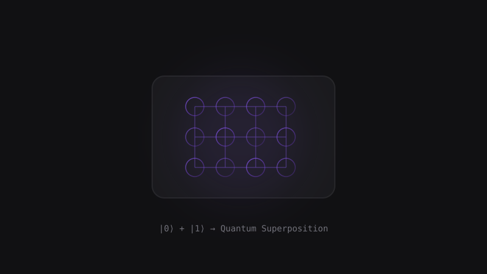

TeknolojiKuantum Bilgisayarlar: 2025'te Neredeyiz ve Geleceğimizi Nasıl Değiştirecek?
Klasik bilgisayarların milyonlarca yılda çözeceği problemleri saniyeler içinde çözebilen kuantum bilgisayarlar, artık laboratuvarlardan çıkıp gerçek dünya uygulamalarına adım atıyor.
Devamını Oku →